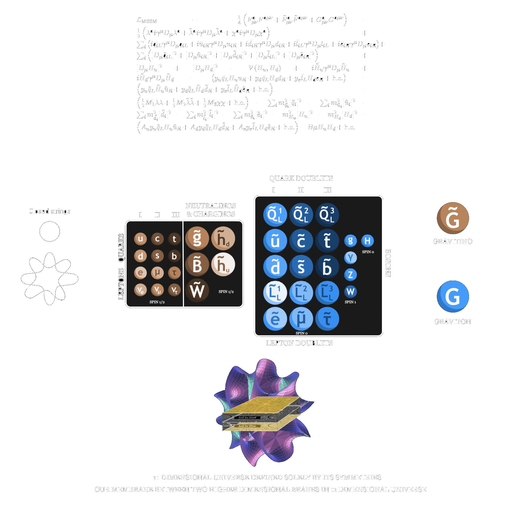

DISTANT WORLDS | 🚧 Under Construction and rewritten🚧
Rewritting
Current Characters List
Harrison Wells - Chairman of Scientific Assembly, Govermental org, specialist on Archangels, has archangels' facility communicating with him hich call herself 'Lotus'
Victor Dastarian - Captain of United LunaTerra Army, owner of CRS Graviton on papers, Prominant Soldier and Mechanic
Vitas Vanir - Medaled Lieutenant of Martian Navy, Finished its 3 year duty and is now 'gunman' of Graviton crew
Ford Dastarian - Former Vishapakar's Blacksmith and Mechanic, Responsible for ship's wellbeing with Victor, Victor's brother
Emilia - Wife of Victor, by experience a medical nurse, later on will be head of medical staff
Lotus - Archangel's organic lifeforms study facility board computer, in direct communications with the 'Forgotten Planet'', Chose Harrison Wells to open communications from current most dominant civilisation, Humanity
Ludwig, Asim and Jaanus -> Known contacts and friends from SEA, fought together in resistance against Mars, Asim sacrificed himself by crashing into juggernaut-class reactor
Goverment Figures
Anders Levandi - United LunaTerra Prime Minister
Adrianna Johnson - Defense Minister of ULT
General Marcus - Head of Martian Technate Defense
Admiral Visaki - Martian Homeland Security Administrator
Domenic Giovanni - Martian Technate President
Christopher Chermeyev - Leader of Settled Exoplanets Alliance
William Xi - Second hand of Chermeyev, loyal follower, prominant diplomat
Redirect to Story Pages | Unfinished, Password Protected
New Updates to Wiki: Vishapakar and Dyson Terra

mMONTAGEe's Workshop
Worldbuilding Contributors: Varaxia, Stips
Web Contributors: Gerardagh
 Nations (Outdated)
Nations (Outdated)